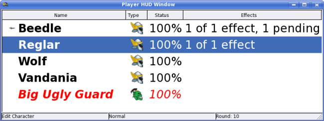

Player HUD
Some Game Masters use a secondary monitor to show their players pictures of
NPCs or the setting to add that extra dimension of realism to
their campaigns. If you are one of those GMs, Turn Watcher now has a
built-in player heads up display (or HUD for short).
To activate the player HUD, go to the View menu and make sure "Show
HUD Window" is checked. A new window will appear:

Just drag the window over to the secondary monitor so it is visible to your
players. Right clicking on the panel allows you to adjust the font size for the HUD
only. Just select the "Change font" menu to do so.
A new entry in the edit window allows you to enter a "public" name for the
combatant. So for monsters, you can show the players one name, yet have
the real name concealed only for yourself to see.
Note that effect counts on monsters are not visible to the players
Tip:
Use Ctrl-H to turn on or off the Player HUD.
|